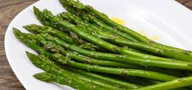

Quick Asparagus

Description
This is a quick and easy asparagus recipe. Should take under 10-15 minutes from start to finish, which is great for a meal on a short notice.
All you need is a bunch of asparagus, salt and pepper, mustard, vinegar and olive oil for the dressing.
Ingredients
- Asparagus bunch
- Salt and pepper
- Mustard, vinegar and olive oil for dressing
Directions
- Wash asparagus and snap the hard and woody ends off.
- Bring a pot of water to boil and add salt to taste.
- Add asparagus and boil for 1-2 minutes with lid closed.
- Drain asparagus and blanche if needed.
- Whisk together the dressing by combining ingredients in a ceramic bowl or cup.
- Serve asparagus with dressing!